|
|
| snakes text index | photo index |
| Phylum Chordata > Subphylum Vertebrata > Class Reptilia > shore snakes |
| Yellow-lipped
sea krait Laticauda colubrina Family Elapidae updated Oct 2019 Where seen? This beautiful snake is sometimes seen on our Southern shores especially at night, hunting among reefs and coral rubble. The snake is typically found in shallow seas around coral reefs and rocky shores. Some place them in Family Hydrophiidae. According to Baker, in Singapore, it is only found on our Southern Islands. It can crawl about on land (not helpless like other sea snakes). It is widely distributed in the Indo-Pacific. Features: To about 1.4m long. Males are smaller (rarely more than 1m in length) while females are heavier bodied and longer. Bluish-grey with distinct smooth scales and regularly spaced, equal-sized black bands that circle the entire body. Its upper lips are distinctly yellow, thus its common name. Head slightly distinct from the body, but no obvious 'neck'. Its tail is flattened sideways into a paddle-like shape and used like an oar to swim with. At first glance, the tail and the head of this snake look very similar. A study suggests this may help protect the snake from its predators.
Sometimes confused with the harmless Banded file snake (Acrochordus granulatus). Here's how to tell apart banded snakes seen near the coast. It may also be confused with eels. Here's more on how to tell apart sea snakes, eels and eel-like animals. What does it eat? It eats fishes and fish eggs. Eels are among their favourite prey. It has been seen actively hunting at night on the shore even at low tide, probing the coral rubble crevices for tit bits. It also comes ashore to rest, digest its meal, shed its skin and to mate. Sea snake babies: These snakes generally breed on coral atolls and rocky islets where they may gather in large groups to do so. The reef flat at Pulau Sudong used to be a well known nesting ground for the snake until it was reclaimed. The mother snake lays 5-9/7-13 eggs, in caves and grottos. The babies look just like their parents. Status and threats: Our sea snakes are listed as 'Endangered' on the Red List of threatened animals of Singapore. Like other creatures of the intertidal zone, they are affected by human activities such as reclamation and pollution. |
|
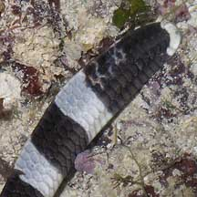 It has a paddle-shaped tail. Sentosa, Oct 03 |
||
 Head and tail can look similar at first glance. Sisters Island, Nov 03 |
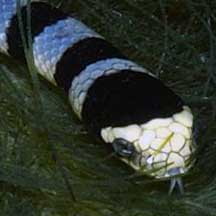 Like other snakes, it sticks out its tongue to sense its surroundings Sisters Island, Dec 03 |
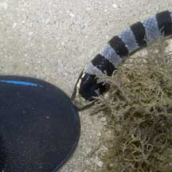 These snakes are curious but will not bite if not provoked (that's my bootie!) Pulau Semakau, Sep 05 |
| Yellow-lipped sea kraits on Singapore shores |
On wildsingapore
flickr
|
| Other sightings on Singapore shores |
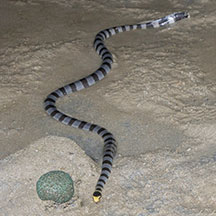 Kusu Island, Aug 24 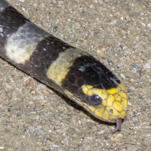 Photo shared by Marcus Ng on facebook. |
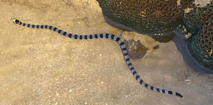 Kusu Island, Jan 24 About 40-45cm long. Photo shared by Kelvin Yong on facebook. 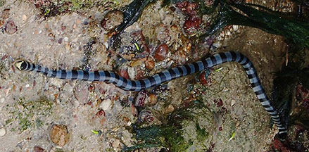 Kusu Island, Apr 17 Photos shared by Toh Chay Hoon on facebook. |
|
|
||
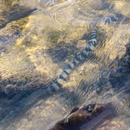 Big Sisters Island, Jan 26Photo shared by Rui Quan Oh on facebook. |
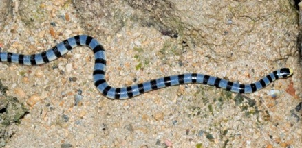 Sisters Island, Feb 11 Photo shared by Loh Kok Sheng on his blog. |
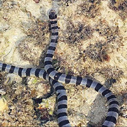 Pulau Salu, Jun 10 Photo shared by James Koh on flickr. |
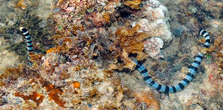 Terumbu Benban, Jun 14 Photos shared by Loh Kok Sheng on his blog. |
| Filmed on Pulau
Hantu on 12 Apr 09 Yellow Lipped Sea Krait @ Pulau Hantu 12Apr2009 from BeachBum on Vimeo. |
| Filmed on Pulau
Semakau on 6 Nov 09 Yellow-Lipped Sea Krait @ Semakau 06Nov2009 from BeachBum on Vimeo. |
|
Links
References
|